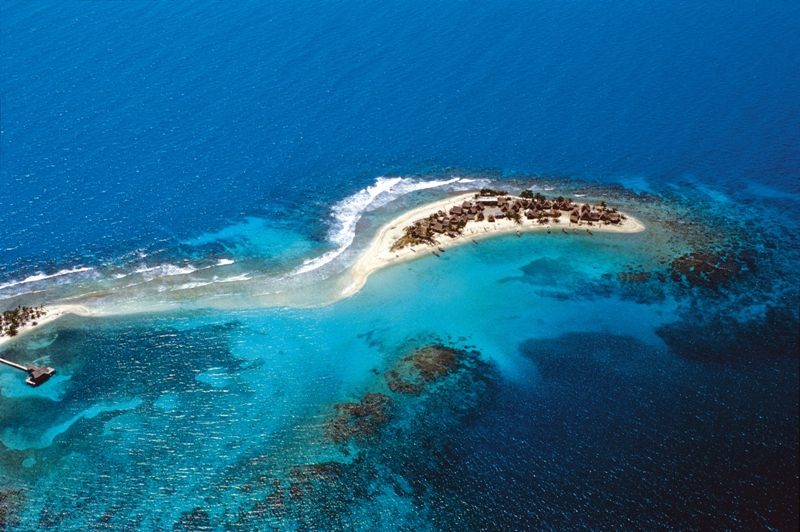

Las tres islas de la Bahía (Roatán, Utila y Guanaja) se encuentran en el extremo sur de la barrera coralina mesoamericana, el segundo mayor arrecife de coral del mundo, en cuyas aguas azul turquesa se encuentran riquezas inimaginables. Sin embargo, los precios siguen siendo notablemente bajos, lo que convierte las islas de la Bahía en un lugar estupendo para iniciarse en el buceo. Las islas ofrecen tres experiencias totalmente distintas. Roatán tiene un poco de todo: hoteles asequibles y de lujo, tiendas de submarinismo y resorts con todo incluido, ecoparques y actividades para aquellos que no deseen practicar submarinismo. Utila es el clásico lugar para mochileros, con carreteras terrosas, alojamientos y comida baratos. Guanaja, por su parte, es la menos visitada, con un toque asilvestrado y solo unos pocos hoteles y restaurantes.
Ubicación y tamaño
La geografía de las Islas de la Bahía es quizás una de las características más valiosas para el desarrollo de su industria turística. El ambiente tropical, incluyendo el Mar Caribe, proporcionan recursos importantes para el tipo de turismo que es muy popular hoy en día.
Las Islas de la Bahía son uno de los 18 departamentos en la República de Honduras. La superficie total de las islas de la Bahía se aproxima a 260 kilómetros cuadrados. Están localizadas en un arco de 29 a 60 kilómetros de la costa norte. Este departamento, está conformado por tres islas mayores, cinco islas menores y 65 cayos.11
La más grande y más predominante de estas islas, en términos de territorio y población es Roatán. Está a 29 kilómetros (18 millas) al este de Utila. Ésta isla tiene 33 millas de largo por 4 millas de ancho y representa un tercio del total de las islas. Está situadas a los 16° 23' de latitud Norte, y los 86° 24' de longitud Oeste.
La isla de Guanaja localizada 16° 24′ de latitud Norte, 85° 54′ de longitud Oeste es la segunda isla en importancia del departamento por su tamaño. Tiene aproximadamente 9 millas de largo por 4 de ancho (16 kilómetros 668 metros por 9 kilómetros 260 metros). Esta isla, se encuentra a 70 kilómetros de la costa norte de Honduras y a 12 kilómetros de la isla de Roatán.
Utila es la más pequeña de las islas mayores. Tiene 14 kilómetros de largo por 8 o 9 de ancho en su mayor amplitud. De todas las islas es la más cercana a tierra firme. Está ubicada a unos 18 kilómetros del puerto de La Ceiba, (Honduras). East Harbor es el único asentamiento aglomerado de esta isla, sin embargo, doce cayos poblados se encuentran fuera de el extremo suroeste de la isla
Clima
"El clima de las Islas de la Bahía, se halla condicionado por la temperatura del mar, la llegada de aire de origen extra tropical y marítimo tropical y por el grado de estabilidad e inestabilidad de las masas de aire. El régimen pluvial de las islas es propio de los climas tropicales lluviosos."
En Islas de la Bahía, "el clima es más suave que en el territorio continental, con fuertes precipitaciones. La temperatura media mensual suele situarse entre 20 y 27ºC. La amplitud térmica anual es inferior a los 3º. La humedad relativa es muy alta, más de 2000 mm anuales, Las mayores precipitaciones coinciden con los equinoccios, mientras que los mínimos se producen en los solsticios."
"Las elevadas y constantes temperaturas hacen que el aire cálido se esté elevando de forma constante, creando los centros de bajas presiones que predominan en estas áreas. Al elevarse el aire se va enfriando y al estar muy cargado de humedad y muy cercano al punto de saturación, una pequeña disminución de la temperatura provoca la condensación y precipitaciones. En las últimas horas del día cuando las temperaturas descienden un poco se suelen producir la mayor parte de las precipitaciones."
"La duración día/noche y la posición de los rayos solares varía mínimamente a lo largo del año, lo que unido al elevado grado de humedad produce un calor asfixiante. Es en las últimas horas de la tarde o primeras de la noche, cuando refresca un poco, en el momento en que se producen las lluvias termo convectivas características de este tipo de climas, y que son prácticamente diarias.